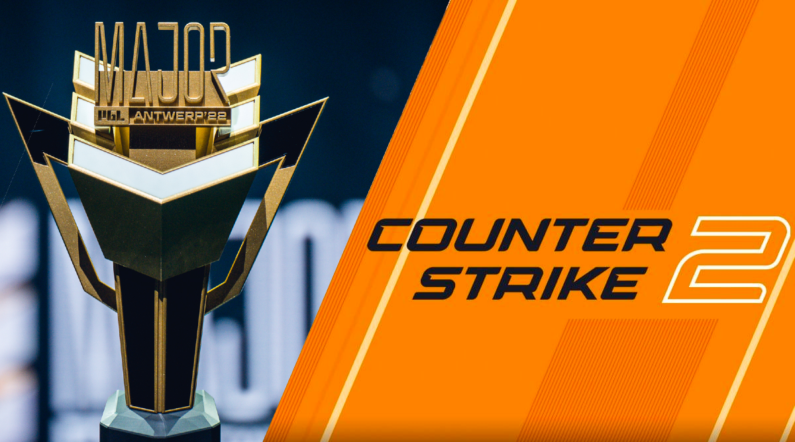
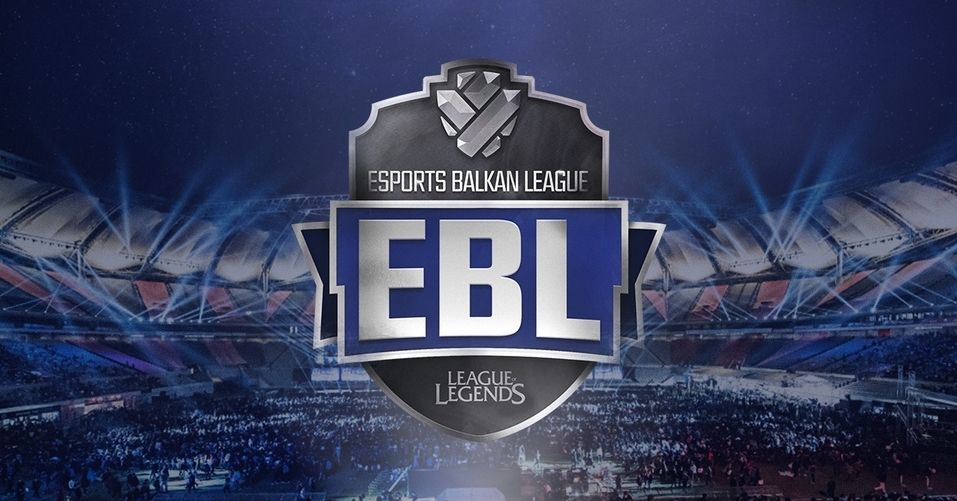
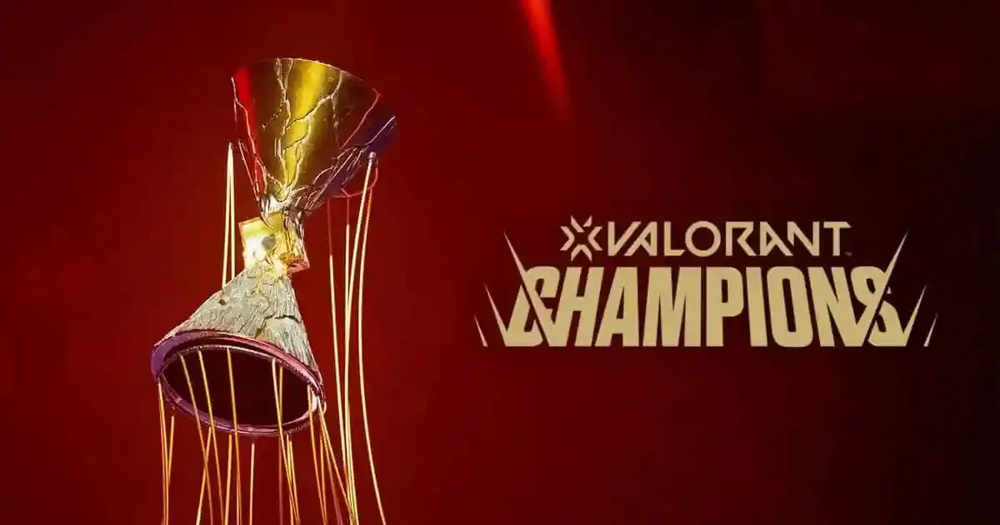

E-Sport Turniri
Spisak predstojećih i nedavnih e-sport turnira u regionu i svetu.

Regional Major - Counter-Strike 2
Datum: 15.09.2025.
Lokacija: Beogradska Arena, Beograd
Nagradni fond: 100,000€
Najveći regionalni CS2 turnir do sada. Očekuju nas napeti mečevi najboljih timova iz regiona u borbi za prestižnu titulu i vredne nagrade.
Saznaj Više

Balkan League - League of Legends
Datum: 01.10.2025. - 15.10.2025.
Lokacija: Onlajn
Nagradni fond: 50,000€
Tradicionalna balkanska liga u LoL-u ponovo okuplja najbolje igrače. Pratite uživo prenose na našem Twitch kanalu i podržite svoje favorite.
Saznaj Više

Adriatic Championship - Valorant
Datum: 05.11.2025.
Lokacija: Zagrebački Velesajam, Zagreb
Nagradni fond: 75,000€
Prvo veliko takmičenje u Valorant-u za timove sa Jadrana. Ne propustite spektakl i priliku da gledate najbolje igrače uživo!
Saznaj Više